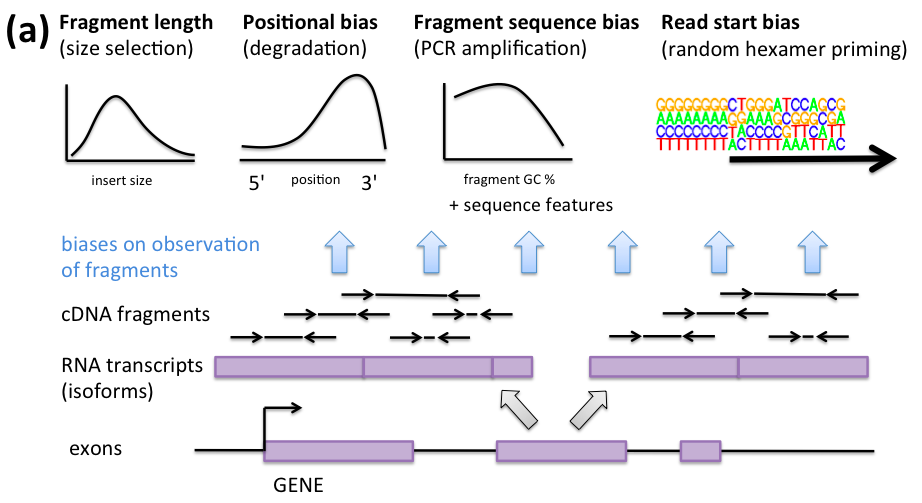
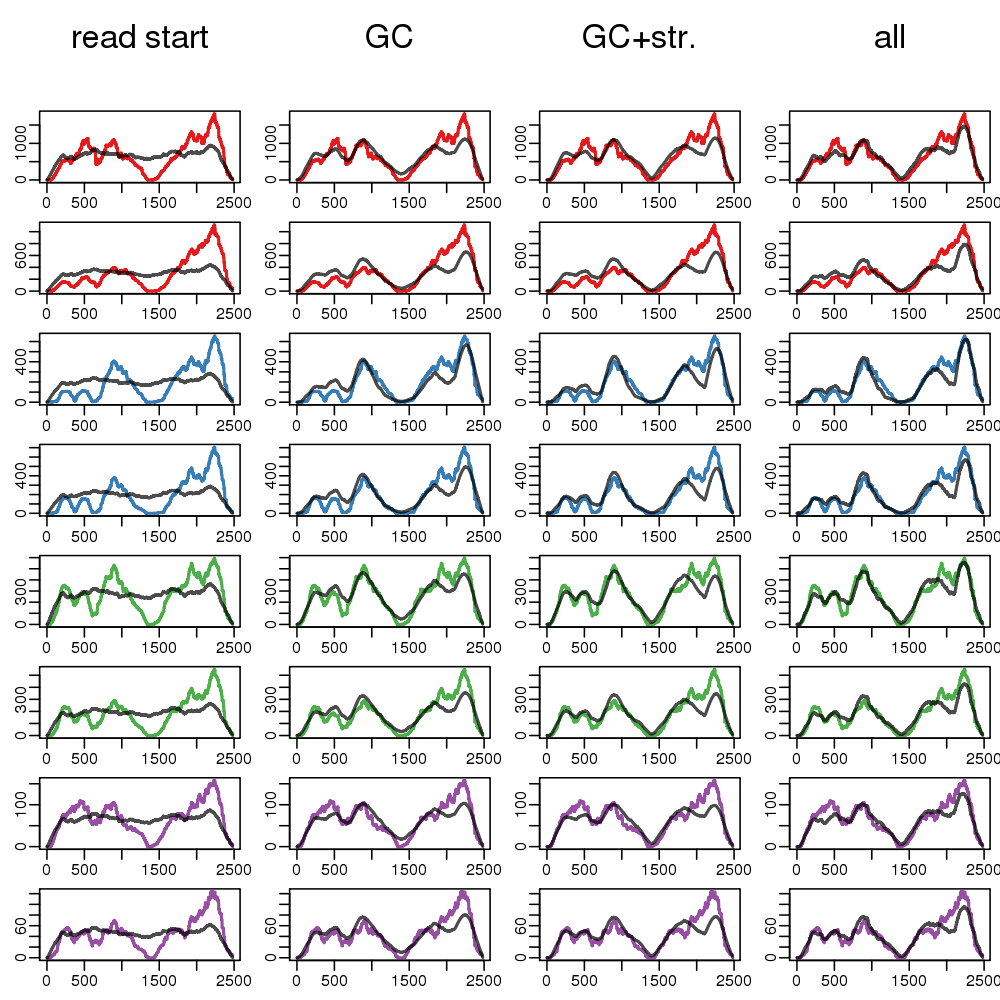
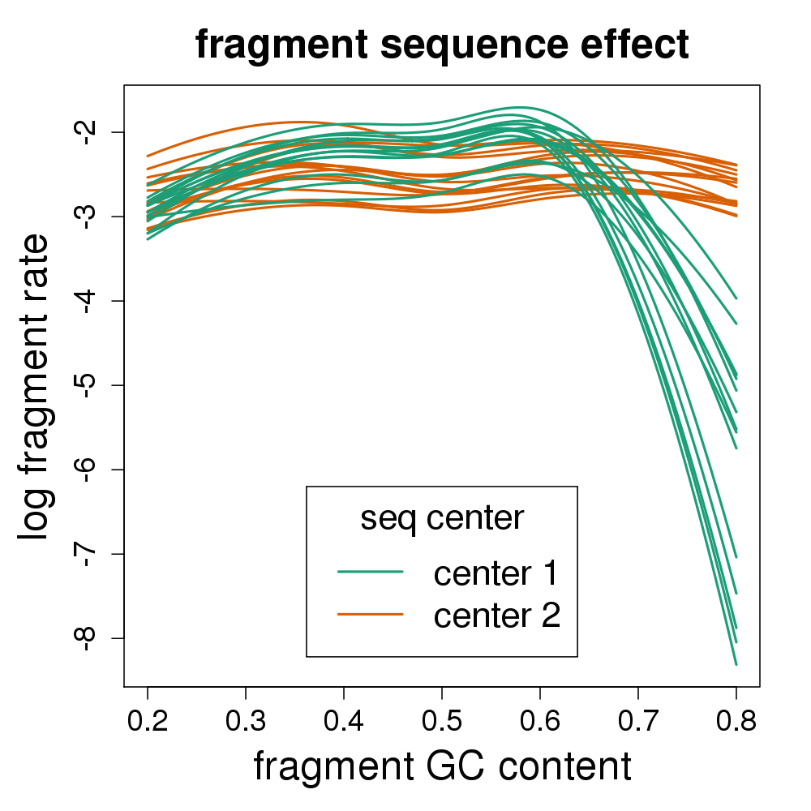
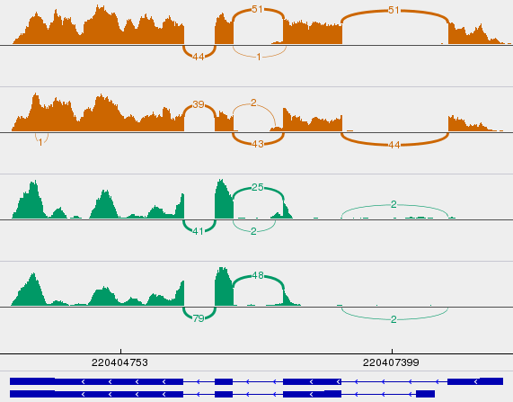

Tackling batch effects and bias
in transcript expression
Michael Love
@mikelove
2015-12-7: EuroBioc2015
this talk: http://mikelove.github.io/eurobioc2015
Two parts:
- RNA-seq sequence biases
- Implications for exon, transcript, and gene analysis
Some RNA-seq biases

Sequence bias correction

Roberts, et al. Genome Biology, 2011
- A great paper on concepts of RNA-seq bias and correction
- Random hexamer priming is most important. Used by Cufflinks, eXpress, BitSeq, kallisto.
- GC content of transcript doesn't capture the bias
- "although normalization of expression values by GC content may be a simple way to remove some bias, it may well be a proxy for other effects rather than of inherent significance"
Does this do the trick?
- 15 vs 15 GEUVADIS samples across sequencing center
- Cufflinks with random hexamer bias correction

- At 1% FDR, 2,500 transcripts DE (10%)
- 600 genes change major isoform (9%)
- NB: this is a lot of changes!
What's going on?
- For those genes with 2 isoforms, find the critical regions which are exclusive to one or other isoform
- Calculate GC content of those regions

Idea:
- Inspiration from Benjamini and Speed, 2012
- The correct resolution for GC content correction is at the fragment level, the unit which is amplified
- Include in the model the probability of observing a fragment, given its GC content
A dataset where we know the exact sequence
- Lahens, et al. 2014: IVT-seq
- Predict coverage (test set) along the most troublesome transcripts using:
- read start bias (Cufflinks VLMM)
- fragment GC content
- also modeling long stretches of G|C

color = coverage; black = test set prediction
Even more examples

Systematic comparison

- Fragment GC content explains 2x more coverage variability
- Adding read start to the fragment GC model: no improvement
A transcript quant method, alpine, for comparing bias models:
- read start bias (Cufflinks VLMM)
- fragment length
- positional bias
- fragment GC content
Back to 15 vs 15 GEUVADIS samples across sequencing center
Four fold reduction in false positives

What are these false positives from?
Coverage drop-out based on fragment GC content

- No existing quantification method corrects for this bias
- There are many genes with critical regions in this range
- Other experiments with problems with low GC
Misidentified isoforms from coverage variability
 

- Regardless of junction spanning evidence, naive quant methods are tricked by variable coverage
- What about k-mer / pseudo-alignment methods?
Pseudo-alignment: same misidentified isoforms

- Missing k-mers cause same problem as missing fragments for a model which does not expect coverage drop-out
- For 5,700 transcripts: 136, 562, 577, 548, 614 false positives of differential expression across sequencing center
Summary part 1
- No existing quant tools correct for fragment GC content
- Not just a batch problem, we see ~10% wrongly identified transcripts in the samples with coverage variability
- Simulations often do not include coverage variability, so not learning much about accuracy on real data
- See manuscript for more details, examples: alpine ms
Implications
- Exon-level analysis can be corrected using exon GC content as covariate
- Transcript- and exon-level DE analysis fixed by balanced design and blocking factors
- Gene-level analysis mostly avoids the big problem of misidentified isoforms and false positives
Gene-level count criticisms
- Counts are correlated with feature length: Cuffdiff2 paper
- Ignoring multimapping fragment can lead to false negatives: Watson paper
Graphic of really easy to fix length problem
Gene-level count defenses
- For human, most common number of isoforms = 1
- Among multi-isoform genes, most transcripts are similar length: median ~15% difference in length
- So differential tx usage doesn't typically lead to large bias
- Transcript estimation is sometimes unidentifiable

Why still counts?
- Any statistician in the world would want: counts, offset/exposure
- I counted 10 penguins in 10 min, and 20 penguins in 20 min
- (Mostly important when sample size is small-ish)
New quantification methods
- Sailfish/Salmon and Kallisto are game changing methods. Quantification from FASTA in minutes
- For those who still want gene-level DE
- to reduce problems of bias and unidentifiability:
- Summarize counts (or estimated counts) to gene-level
- Calculate offset based on average transcript length
Comparison to counts alone
- Importing counts and offset from these methods is easy
- Charlotte Soneson and Mark Robinson have extensively studied using these quant tools with Bioconductor software, manuscript in preparation
- Together, put together a package
- (note: ignoring bootstrap variance)
Graphic of package